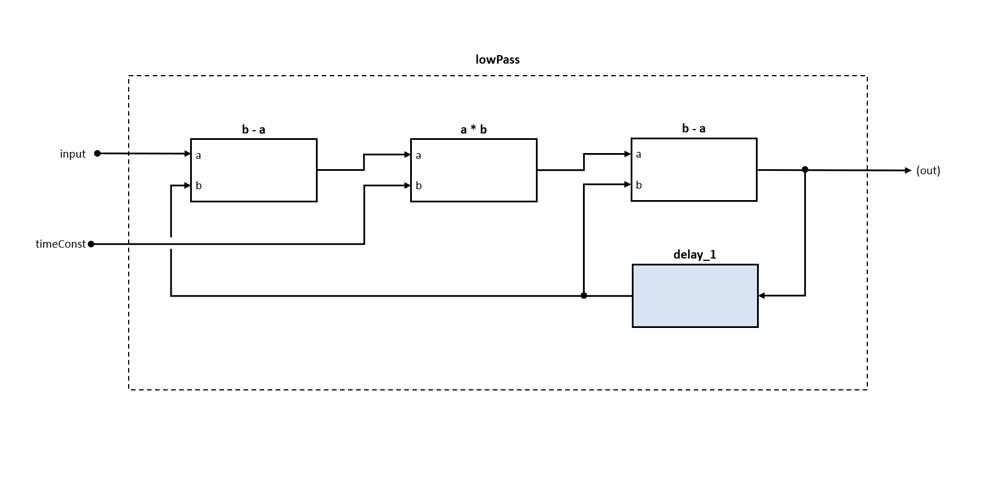
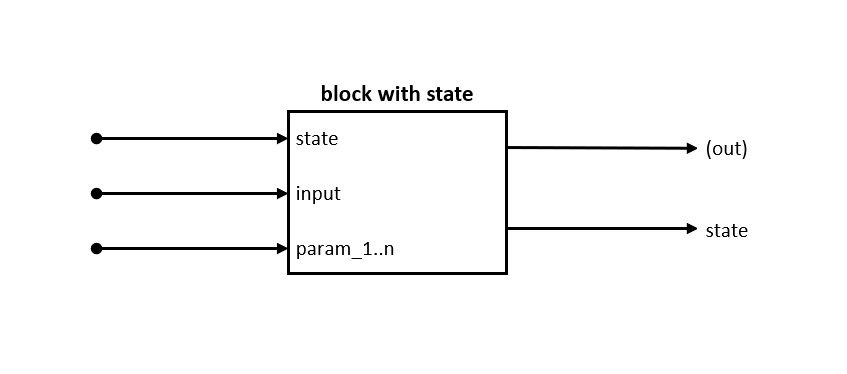

Digital Signal Processing with F# (in the Domain of Audio and Music)
Introduction
Motivation
Making music with the help of computers is not new. It started with the MUSIC/MUSIC-N language family, which was already capable of synthesizing sounds, back in the 1950s. There are a lot of graphic tools like PureData, with which the user can put together signal flows by dragging predefined objects onto a canvas and connecting their inputs/outputs. Some tools focus on controlling, composition and live performance, like Sonic PI or Tidal, while others can do both, like SuperCollider. Other languages and tools incorporate interesting concepts to make working with (audio and control) signals easy, like ChucK, which has an interesting way of dealing with time. There is the FAUST language that makes use of a pure function composition concept quite similar to Haskell's Arrows. And of course, with the widely used multiparadigm languages like C or C++, the user can do basically everything, as long as he or she knows how to do it. There is way more interesting stuff out there, such as the JavaScript library genish.js / gibberish, which aims to provide ways by which a user can define a syntax tree that is translated into high performance code.
Because developing software is my profession and my hobby, I wanted to understand why there are so many different tools and languages out there. I started my own work in C#, since this is the main language I work in, with a focus on sample-based generation and processing of audio signals (the code is available here, but it is not maintained anymore). But I soon began to realize that there are disadvantages: I had to deal with aspects that had nothing to do with describing signal flows, and I had to write a lot more boilerplate code. That all smelled like accidental complexity, and I asked myself how I could find abstractions that would help me write code that was readable and understandable, and that focused solely on signal processing.
After evaluating several languages, I decided to use F#, mainly due to its "in-built" flexibility without dealing with macros or other hardcore meta programming techniques or compiler hooks (although I find them very interesting). Also, I'm quite familiar with .NET, but that turned out to be not important at all. One thing I can state is that I learned a lot, and I have never regretted my choice to use F#.
What is DSP?
A Brief Definition
In the analog world, physical quantities like electric currency are used to represent a signal that is finally sent to a speaker. These quantities are created and altered by low-level components like condensers, resistors, magnetic coils, transistors, and diods, which are connected to each others in circuits. They are composed in larger components like operational amplifiers that are used to build modules like filters and oscillators, which synthesizers and effect processors are made of. Digital audio signal processing (Audio DSP) is about modeling these components at different levels of abstraction, resulting in the simulation of circuits similar to their analog counterparts (of course, there is no limit to creating completely new forms of synthesizers and effects).
Quantization of Time and Values
Digital signal processing - in contrast to analog signal processing - deals with quantized values over a discrete time. Consider, for instance, an analog synthesizer. It creates and outputs a signal based on electric currency, which is continuous from a physical point of view. A computer cannot process values in a continuous way - it has to quantize two things:
Time:
This is called sampling, and it happens for an audio signal usually at multiples of 44100 times per second (44.1 kHz). Why 44100? Take a look at the Nyquist-Shannon sampling theorem (you do not have to read the Wikipedia article it to understand this article).
Values:
At each sample point, a value must be captured (analog to the electric currency). This happens usually in a number represented by a 16, 32 or 64 bit value. In this article, I use a F# "float" value, which is a 64 bit floating point number between 0.0 and 1.0 (normed to 0% .. 100% amplitude).
Having understood this definition, it's easy to define what a signal is.
Sampling these values with constant time intervals results in a sequence of values.

Here, I have captured a sine wave with the amplitude of 0.5 and a frequency of ca. 150Hz (assuming the x-scale is milliseconds, then I have three cycles in 0.02s = 150Hz). The sample rate is 1kHz because I have captured 20 samples in 0.02s. That makes 1000 samples in 1s. This is 1kHz.
Given that I have a sample rate of 16Hz, I can just a value sequence instead of a time-value sequence:
[ 0.0; 0.4047782464; 0.4752436455; 0.1531976936; -0.2953766911; -0.499994728; (*and so on *) ]
The point in time of the the n-th value in the sequence can easily be calculated when sample rate and starting time are given. This fact is fundamental and leads to a definition of what processing means:
That sounds very general - and it indeed is! The techniques introduced here have basically no specialization in terms of "sound" or "audio" - even if they fit well in that domain.
For the sake of simplification, please note that the sample code won't use real-world parameters like 8000.0Hz. Instead, pseudo values are used to create a comprehensive result and keep the code simple.
Real Time
"Real Time" originally means that a system is able to react in a predefined timespan. That does not necessarily mean it has to be "fast" in the context of the problem, but only that it is reliable in terms of reaction time. Since making music mostly has a "live" character, this is a huge constraint that affects how computer music is made. An example: You composed a nice synth line, and now you want to apply your handwritten distortion effect to it. While it is playing, you want to tune parameters of your effect - and you expect to hear a change in sound immediately, which usually means in some 10 to 100 ms. When that timespan is longer, IMHO, it's not that fun anymore and is also harder because you are missing the direct feedback of your action.
As a consequence, you have to design systems that work on a per-sample basis instead of having random access to the whole input sequence. This means it is not possible to wait until the whole input signal (the synth line) is available and then apply your effect by mapping values. That amount of latency wouldn't be acceptable for the most use cases. Therefore, signal processing can be seen as some kind of stream processing.
Distinction
Audio DSP and computer music are broad fields. This article focuses on some aspects while only touching others or not discussing others. Here, I will list the key concepts and distinctions of this article.
- The focus is on creating and manipulating samples that finally may result in sounds, rather than on control signals or composition. It also does not discuss libraries for audio playback.
- The article focuses on monophonic mono signals, although the concepts allow polyphony and multichannel signals.
- There are no performance considerations in this article for the introduced concepts.
- Signals are represented in the time domain, not in the frequency domain.
F# Getting Started
F# is a concise and easy to learn language, since it has only a few, but powerful, key concepts and an easy to understand syntax. If you have never dealt with a language of the ML family, I recommend these sources for getting started with F#.
If[SGF16] you are familiar with a modern language like C#, Java, C++, JavaScript, TypeScript, Python (or whatever), this might be a good source for a kick start.
This was my primary source when I was getting involved with F#, and I can definitely recommend it when you want to learn about the key concepts of functional programming. I recommend reading this, this, and this.
The book Real-World Functional Programming: With Examples in F# and C# by Tomas Petricek.
The book Expert F# 4.0 by Don Syme et al. I especially recommend chapters 2 and 3, which capture the most common functional aspects of F#.
Setup and Samples
A lot of code is presented in this article. Since no one has to believe that the things I'm telling here are true, you can easily reproduce and comprehend them by your own.
I recommend an easy setup consisting of the following tools.
- Visual Studio Code
VS Code is a lightweight and free to use editor. Get it here!
- Ionide
Ionide is a VS Code package suite for cross platform F# development. You can get it here.
On the Ionide homepage, you can see how to install F# for your platform (macOS, Windows, Linux).
- F# Interactive
I recommend making yourself familiar with the concept of interactive development, which is called "F# Interactive". It is a playground for evaluating code snippets that are built upon each other, without setting up a whole development project. The concept and tools are well explained in the reference list above. Using VS Code and Ionide, you have everything you need to get started immediately.
Article Sources
There is a github repository that you can clone (or view online) with all the samples included.
Now you are equipped with everything you need, so let's get our hands into it!
Writing Stateless Functions
Since we now know what a signal is (a value that changes over time), that DSP is easy (dealing with sequences of values), and that we are interested in functions that transform scalar inputs into scalar outputs, let us start directly by writing a processing function. Later on, you will see how to compose these small functions to a larger system.
Amplifier
Amplifying signals is a science in itself. You could spend a lot of money buying analog gear that sounds just "right," but "right" is a subjective term based on a user's preferences. For us, a simple solution will be enough. Amplification of a signal in this context means scale values linearly. We can do that this way:

Linear scaling of a value is mathematically just a multiplication, so that is indeed very simple. This function does the job:
// float -> float -> float
let amp amount input : float = input * amount
Another Example: Hard Limiter
Now that we have our amplifier, we want to have the ability to limit a signal to a certain boundary. Again, there are a lot of ways to do this in a "nice" sounding way, but we will use a very simple technique that leads to a very harsh sounding distortion when the input signal gets limited. The limiter looks like this:
// float -> float -> float
let limit threshold input : float =
if input > threshold then threshold
else if input < -threshold then -threshold
else input
Note that in this case, we only write the resulting type (float). The types of amount and input are inferred, which means the compiler understands which type they are just by looking at the way they are used. We can also write it with explicit types for all input parameters:
let amp (amount: float) (input: float) : float = input * amount
In the next samples, we will use the first variant so that we have some meaningful names for our parameters.
Looking closely at the amp function, it becomes clear that we simply wrapped the * function (multiplication of two floats). Since F# "curries" functions by default, we can rewrite amp. If you want to take a deeper look into currying and the consequences it has, I recommend you go here.
In short, when the compiler curries a function, it transforms one function with n parameters into n nested functions, which each have one parameter.
In the case of amp, it would look like this (manual currying now):
let amp (amount: float) =
fun (input: float) ->
input * amount
And indeed, both ways of writing amp result in the same signature: float -> float -> float.
Since the F# compiler curries by default, we could now just leave out the last parameter because nothing would change.
Currying makes it simpler:
// (*) is now prefix style.
let amp amount : float = (*) amount
Again, we could leave out amount, having defined just an alias for the (*) function:
let amp = (*)
Why is that important?
In our case (and in a whole lot of other cases), currying is extremely useful because it enables us to recognize functions as a kind of "factory function" for inner functions. Applying the first parameter to a function results in another function with the rest of the parameters. This is important when it comes to composing our processing functions.
Composing Stateless Functions
Serial Composition
The amp and limit functions are so small that we won't break them into smaller pieces to reuse them. They are kind of "atoms" in our context. But of course, we want to do the opposite: to compose them to larger, higher-level functions (that themselves can be composed again to higher-level functions, and so on).
Let's say we want to build a nice distortion effect that is defined in this way:
let distort drive i =
let amplified = amp drive i
let limited = limit 1.0 amplified
limited
We can now visualize this function in a so-called block diagram:

The drive parameter controls how much distortion we want: 1 means no distortion, and the bigger the value gets means a lot of distortion. We achieve this by feeding the input into our amplifier. The output of the amp is then fed into a limiter. Let's call this technique of composition serial composition.
We use an explicit identifier (amplified, result) and evaluate our amp and limit functions. This can be a useful technique, e.g., when we want to reuse the amplified value in a more complex scenario (which we will see shortly). For serial composition, we can use alternatives to make our code more "compact":
let distort1 drive input = limit 1.0 (amp drive input)
let distort2 drive input = amp drive input |> limit 1.0
let distort3 drive = amp drive >> limit 1.0
- Inline the expressions
This is a bit sad because the signal flow is reversed: it is written limit, then amp. But the order of evaluation is amp, then limit. To make our code look more like the actual signal flow, we can use:
- Pipe operator
The pipe operator is explained here and basically boils down to this: it takes the value on the left side (in our case, it's a function that gets evaluated before the result gets piped) and feeds it to the function on the right side.
Now, having this in mind, remember the previous chapter, when I stated that currying is very important. Now we can see why: we said that we are interested in functions of form float -> float, and now it's clear why: it enables us to compose functions always in the same manner. But when we review our amp function (and also the limit function), we see that they are float -> float -> float. This is because they not only transform an input value into an output value, but they also require an additional parameter to control their behavior. This is important: we have to design our "factory functions" (curried functions) so that all parameters come first and then are followed by the input value to have a float -> float function at the end that can easily be composed. When things get more complex in the next section, the technique of currying will help us a lot.
- Forward Composition Operator
This is a nice way of composition because it is just a "construction manual" for a signal flow. Neither of the two given functions is evaluated at all. The two functions are just combined to a bigger one and evaluated only when used.
In the following code samples, we will use all these composition techniques, depending on the use case. There is no "right or wrong," just a "better fit in this case" or even just a user's preference.
Parallel Composition (Branch and Merge)
Now that we understand what serial composition is, we know it is useful to have functions of type float -> float, and we understand that serial composition of these functions can be done by using the >> or |> operators.
Let's extend our sample in a way in which the techniques of serial composition is not sufficient.
The distortion effect we just engineered sounds nice, and we want to be able to "blend it in" together with a low pass filtered version of the original signal. Low pass filter means we want to get rid of the high frequencies that may sound "harsh", and preserve only the low frequencies. At the end, the whole result will be faded in over a certain time and output-gained (amplified). Visualizing this in a block diagram is easy:

Some things to note on the block diagram are:
- the output value of "amp" is used in two following branches;
- the output values of the two branches are then aggregated by the "mix" block;
- the output value can then be processed further by the "fadeIn" block; and
- we have an output gain to lower the signal's strength.
Now we will look at a technique whereby we can translate this behavior to F# code. Think about what "branching" means: "use an evaluated value in more than one place in the rest of a computation."
As usual, there are a lot of ways to achieve this. I recommend taking some time and thinking about how this could be done. In our sample, we bind meaningful values to identifiers:
let blendedDistortion drive input =
let amped = input |> amp drive
let hardLimited = amped |> limit 0.7
let softLimited = amped |> lowPass 0.2
let mixed = mix 0.5 hardLimited softLimited
let fadedIn = mixed |> fadeIn 0.1
let gained = amp 0.5 fadedIn
gained
By introducing the "amped" identifier, we are able to use its value in more than one place in the rest of our computation. Merging is nothing more than feeding evaluated branches into an appropriate function. Of course, there are other ways of writing this code.
Let's focus on hardLimited, softLimited and mixed:
let blendedDistortion_Alt1 drive input =
let amped = input |> amp drive
let mixed =
mix 0.5
(amped |> limit 0.7)
(amped |> lowPass 0.2)
let fadedIn = mixed |> fadeIn 0.1
let gained = amp 0.5 fadedIn
gained
In this code sample, we didn't use identifiers, but passed the two branches directly to the mix function as arguments.
let blendedDistortion_Alt2 drive input =
let amped = input |> amp drive
let mixed =
(
amped |> limit 0.7, // a: First branch: hardLimited
amped |> lowPass 0.2 // b: Second Branch: softLimited
)
||> mix 0.5
let fadedIn = mixed |> fadeIn 0.1
let gained = amp 0.5 fadedIn
gained
There is also the ||> operator: it takes a tuple (in our case, the two branches) and feeds it into a two-curried parameter function (in our case, mix 0.5 evaluates to a two-parameter function).
// ALt. 2: right-to-left pipe forward operator
// Non idiomativ F#
let inline ( ^|> ) x f = f x
let blendedDistortion_Alt3 drive input =
let amped = input |> amp drive
let mixed =
(
(amped |> lowPass 0.2) // b: Second Branch: softLimited
^|> (amped |> limit 0.7) // a: First branch: hardLimited
^|> mix 0.5
)
let fadedIn = mixed |> fadeIn 0.1
let gained = amp 0.5 fadedIn
gained
There is also the possibility of defining an own operator: using the ^ symbol before an operator makes the operator have a right associativity. This means that evaluation is not from left to right, but from right to left. In our case, the mix 0.5 function is evaluated to a two-parameter function. Branch b is passed to that function (a one-parameter function remains), and then branch 'a' is passed to it. Note that (even for mix, it wouldn't matter) we have to switch the order of arguments (first b, then a) to achieve the same order as in the previous samples.
You can even test our operator on your own:
let mix4 a b c d = sprintf "%A %A %A %A" a b c d
1.0
^|> 2.0
^|> 3.0
^|> 4.0
^|> mix4
// evaluates to: "4.0 3.0 2.0 1.0"
Note that is not an idiomatic F# way, and I won't use it in the upcoming code samples.
A Note on "lowPass" and "fadeIn":
Note that for now, we do not have a working low pass filter implementation, so we just use a placeholder function that works like a normal stateless processing function of type float -> float:
let lowPass frq input : float = input // just a dummy - for now...
The same is for fadeIn:
let fadeIn stepSize input : float = input // just a dummy - for now...
A Note on "mix":
We need a "mix" function that has a abRatio parameter to control the amount of both incoming values in the final output. 0 means only signal a; 1 means only signal b.
The function is this:
let mix abRatio a b : float = a * abRatio + b * (1.0 - abRatio)
You can test it with:
mix 0.0 0.3 0.8 = 0.3 // true
mix 0.5 0.3 0.8 = 0.55 // true
mix 1.0 0.3 0.8 = 0.8 // true
Writing Stateful Functions
In the previous chapters, we wrote and composed pure (stateless) functions. This means that processing a signal (= a sequence of values) was made up of the following "recipe":
- we have a sequence of input values;
- we have processing functions;
- we can compose these functions in several ways;
- these functions are curried, so that after application of all parameters, functions of
float -> floatremain; and - we have a "runtime" that generates an output sequence by mapping each value in the input sequence to a value in the output sequence by applying a processing function to the input value.
Revisit Low Pass Filter
Until now, we treated the lowPass filter function as if it was pure, which means that from evaluation cycle to cycle, it does not "remember" anything; there is no information preserved between evaluations of the same function. In case of a filter, this cannot work, because filters need more than a single value: they deal with frequencies, and the concept of frequency requires a timespan. It's about how a sequence of values change over time. It's like with stock prices: you cannot say if there was a crash or if the market is hot by just looking at the current value. You need to look at the development of a price during a certain timespan. There are more things: some filters only need some past input values (FIR, finite impulse response). But there are other filter designs that depend on their past output values (IIR, infinite impulse response). So we need a mechanism that preserves past input, past output (and maybe past intermediate) state.
To understand what this means, we look at how a low pass filter can be designed.
The simplest way of designing an electronic low pass is using a resistor and a condenser in series, which is then connected to a currency that represents the input signal (Ue). The output signal is the currency of the condenser (Ua). So why is that a low pass filter?

Resistor:
It works like a valve in a water pipe: it limits the possibility of electrons to flow around. When you connect the poles of a battery to each other, you will get a shortcut, because the electrons can go from one pole to the other without any obstacle (and releasing the battery's energy in a very short amount of time). But if you connect the poles to a resistor (e.g., a glowing lamp), the electron flow is limited (thus releasing the energy in a much longer timespan).
Condensor:
Basically, it works like a battery - it can store and release energy, but much faster. It is made up of two poles (e.g., metal plates). Each plate can be charged up with a certain amount of electrons; the more electrons it has, the higher the currency measured between the two plates. Connecting a currency to each plate, the electrons will flow from the one pole of the currency to the connected plate of the condenser, and the electrons from the other condenser plate will flow to the other pole of the currency. After some time (which depends on the dimension of the resistor), the condenser has the same voltage as the currency, and it is then fully loaded. If you switch the connected currency poles (+ <> -), the condenser will first unload and then load again with switched voltages until it is in balance with the currency again.
Since the currency represents our input signal, we can say:
- high frequency is a fast change of currency; and
- high frequency is a slow change of currency.
Thus, when the input currency changes very quickly (high frequency), the condenser does not have enough time to fill itself up with electrons, and if we measure its voltage, it will not change. When the input currency changes slowly, the condenser has time for its load and unload cycle, so we will be able to measure a voltage change (which equals approximately the input signal after a longer time when the input frequency is 0).
And that's the low pass filter: low input frequencies can be measured at the condenser output, but high frequencies have no effect on the measured condenser output currency.
The key point for this is: the condenser brings the time into the game. It has state, which is made up of the "current electron load." The next moment's output value is made up of the last moment's internal value and a current external input value.
How can that be modeled?
State in the Block Diagram
Let's describe the characteristics of this lowPass filter in a textual way.
- An instance of lowPass filter has a state that represents the load amount. In our case, that state is proportional to the output value (like the amount of electrons is proportional to the output currency of the condenser).
-
The "calculation recipe" for the output value from one moment to the next moment is this.
Take the output value from the last evaluation (which we call
lastOut).Take the difference between
lastOutand thecurrent input.- Multiply that difference with a given time constant (to slow down the load time and thus adjust the filter's frequency).
- The current output value is that difference subtracted from lastOut.
That's it. Think about it: the bigger the difference between current input and the last output value, the faster the condenser "loads up." The smaller the time constant gets, the slower the system reacts to input value changes - a low pass filter!
Let's see how we can implement it in a block diagram:

One interesting thing to note is there is no explicit state in the way that we store or memorize values. Instead, the state is modeled as "output value delayed by 1 sample" ("delay_1" block), which is then fed back into the next evaluation of the whole function. This is a key point because we can model any kind of local state in that way - no matter how that state is structured (it does not have to be a simple float - it could be anything). A abstract "block with state" can then be modeled like this:

Besides the output value, there is an output state. And beside the input value, there comes an input state that is the output state from the last evaluation (plus the curried function parameters that come first, as usual).
In the next chapters, we will look at ways of writing and composing such functions, and we will understand that these ways provide less or more comfort for the user who wants to express signal processing computations.
We start with an object oriented programming approach.
Composing Stateful Objects
See [src/2StatefulOOP.fsx] as sample source.
As the name implies, we are first going to use an approach called "Object Oriented Programming." If you do not know what that is, read this:
"Object oriented programming (OOP) is the thing with classes."
IMHO, that's not true (at least, it's not the key point). It's true that many object-oriented programming languages have a class-based type system, but that's not the essence of OOP. Another definition of what OOP might be is when three things occur together:
- References: Data are held in objects that have a referential identity (not a value-based identity), and references are shared.
- Mutability: Object values can change over time, while their identities remain (objects are mutable).
- Encapsulation: Data are "protected" by behavior (methods) to help ensure consistency during runtime (encapsulation of local state).
These three characteristics can be seen as features, but at the same time, you have to deal with their consequences, and this has significant impact on how code is written, understood, and used.
The upcoming OOP samples use non-class techniques with functions as objects and closures that capture mutable state. The approach is still object oriented as I've defined it, and it could be easily transformed into code with classes, leading to the same insights. But whether you use a class-based or non-class-based OOP approach, they differ fundamentally from a purely functional approach in which we have no effects (no mutation) and only values (no references).
"lowPass" and "fadeIn" in OOP
Implementation
Here is the implementation of the low pass in F# with OOP techniques:
let lowPassCtor() =
let mutable lastOut = 0.0
fun timeConstant input ->
let diff = lastOut - input
lastOut <- lastOut - diff * timeConstant
lastOut
What we have here:
- the
lowPassCtoris a factory function that evaluates to another function (sounds like currying, but we cannot use automatic currying here since we capture mutable state); - this resulting function can be evaluated giving a timeConstant parameter and an input value (it is again a function of
float -> floatafter applying all parameters except input); and - it captures a mutable
lastOutvalue that is initialized once when thelowPassCtorfactory is called. That value changes each time the resulting function is evaluated.
The same is for fadeIn:
let fadeInCtor() =
let mutable lastValue = 0.0
fun stepSize input ->
let result = input * lastValue
lastValue <- min (lastValue + stepSize) 1.0
result
Usage
In the previous chapter, we have already seen how we would like to use the low pass filter: Like a pure function. Here is again how:
// that compiles, but doesn't work.
let blendedDistortion drive input =
let amped = input |> amp drive
let hardLimited = amped |> limit 0.7
let softLimited = amped |> (lowPassCtor()) 0.2 // we would like to use lowPassCtor
let mixed = mix 0.5 hardLimited softLimited
let fadedIn = mixed |> (fadeInCtor()) 0.1 // we would like to use fadeInCtor
let gained = amp 0.5 fadedIn
gained
But this won't work anymore. We cannot just insert lowPassCtor in a pure computation. But why not, since the compiler allows that? Answer: The blendedDistortion function itself is pure: when it is evaluated multiple times, it always creates a "new" lowPass by calling the lowPassCtor function, with lowPass's mutable lastOut field set to 0.0. It would never calculate anything useful.
This issue can be solved by creating lowPass and fadeIn instances up front and capturing that reference in a closure. In doing so, we have to change our blendedDistortion processing function to a factory function (analog to the lowPassCtor):
let blendedDistortionCtor() =
// create and hold references to stateful objects
let lowPassInstance = lowPassCtor()
let fadeInInstance = fadeInCtor()
fun drive input ->
let amped = input |> amp drive
let hardLimited = amped |> limit 0.7
let softLimited = amped |> lowPassInstance = 0.2
let mixed = mix 0.5 hardLimited softLimited
let fadedIn = mixed |> fadeInInstance 0.1
let gained = amp 0.5 fadedIn
gained
That works! But: It's a burden for the user. Every time a stateful function is needed, it has to be declared before it can be used inside of the computation, and the instance has to be removed when it is not needed anymore. When authoring more complex effects or synthesizers, this can be a major pain. The user's focus is modeling a DSP computation and not instance management. Since instance management is something that has to be done, it draws away attention from the primary goal and interrupts the workflow of the programmer.
So what can be done to abstract instance management?
Look again at this block diagram from before:
There is one important thing to notice: blocks themselves are not explicitly instanciated and then referenced by an identifier in the computation. They just sit in the place where they are used. They are kind of "inlined," even if they carry their own local state.
So it seems that in contrast to OOP, block diagrams work like this:
This is also the case when composing pure functions, and this is what we want to achieve:
How can we do that?
We have to switch the way references are defined, from:
a reference is made up of a unique address in a global address space
to:
a reference is made up of a data structure that is implicitly defined by a computation, plus a local offset inside that computation.
Reaching this goal means the user does not have to deal with instance management, because the aspect of local state would simply result from the way a computation is built by the user.
Writing Stateful Functions
First, let's look again at the block diagram that defines a stateful function:
Notice that the feedback of state is the key point: how can that be achieved? To find an answer, let's just ignore it for a moment. We assume that there will be something that can handle this issue for us. What remains is a function with "state in" and "state out" beside the actual input and output values:

Assuming that some mechanism passes in previous state and records output state (that gets passed in as the previous state at the next evaluation, and so on), we can rewrite the object-oriented low pass filter code by transforming it to a pure function:
// float -> float -> float -> float * float
let lowPass timeConstant (input: float) =
fun lastOut ->
let diff = lastOut - input
let out = lastOut - diff * timeConstant
// the output state **is in this case** equals the output value
let newState = out
(newState,out)
What have we done?
There is no mutable state anymore, since the previous state gets passed in as a function parameter. Benefit: we do not need a
lowPassCtorfunction anymore.After application of the timeConstant parameter and the actual input value, the remaining function has the signature
float -> float * float: the previous state comes in, resulting in a tuple that "packs" output state and an actual output value together.
You have probably seen that we curried the most inner function "by hand." Instead, we could have written one single function like let lowPass timeConstant (input: float) lastOut = .... Since will will "name" those inner output functions, we will stick with the manual curried version.
Abstracting Instanciation
Like stateless functions, we want to compose many stateful functions to build higher-level computations. Since we not only want to compose functions that work like a low pass filter (with float as state), we generalize the function, so that in the end, we are looking for a way to compose functions that look like this:
'state -> 'state * float (instead of float -> float * float).
Since 'state * float tuple is a significant thing that we will need more often, let's transform it to a named record type:
type BlockOutput<'state> = { value: float; state: 'state }
Then the signature of our stateful functions looks like this:
'state -> BlockOutput<'state>
Let's name that function, too:
type Block<'state> = Block of ('state -> BlockOutput<'state>)
The Block type is a so-called single case discriminated union. I suggest you read this to understand how to construct and deconstruct unions, but you can try to figure it out by looking at the modified low pass filter code.
Compared to type abbreviations, single case unions have the advantage that it has to be constructed and deconstructed before the inner value (in our case, the stateful function) can be used. It is an advantage because it's not possible to pass or use a function "by accident" that has the same signature, but different semantics. It can also saves us from writing more type annotations.
The lowPass and fadeIn functions look like this (the resulting functions are simply passed to the Block constructor):
let lowPass timeConstant input =
Block <| fun lastOut ->
let diff = lastOut - input
let out = lastOut - diff * timeConstant
let newState = out
{ value = out; state = newState }
let fadeIn stepSize input =
Block <| fun lastValue ->
let result = input * lastValue
let newState = min (lastValue + stepSize) 1.0
{ value = result; state = newState }
To be able to use a previously constructed single case union, we need a function that "unpacks" the inner value:
let runB block = let (Block b) = block in b
We will see shortly how runB is used.
Generalizing Float
Since we might have signal values that are not always of type float, we can easily generalize the float, so that our types look like this:
type BlockOutput<'value, 'state> = { value: 'value; state: 'state }
type Block<'value, 'state> = 'state -> BlockOutput<'value, 'state>
The code for lowPass and fadeIn remain the same because the compiler infers float.
Now we need a way of composing those functions. The composition must handle the "recording" of the output state and feed it into the next evaluation's input, and this must be done for every block in the computation. This sounds like we are goint to moved the key issue (instance management) into the composition layer. This is true - and beneficial - because we can abstract ("outsource") a recurring aspect of our programming model so that the user does not have to handle it anymore in a concrete way.
Composing Stateful Functions
See [src/3StatefulFP.fsx] as sample source.
So how can a composition function "record and feed back" work? Remember: we do not want to give "names" or "addresses" to our blocks - their identity shall be solely based on their place inside the computation. The composition function itself will consequently also be pure.
Pick Up and Delivery
Let's call the overall strategy "Pick Up and Delivery," and it will work like this:
- In a whole computation, all blocks are evaluated one after another.
The actual value of an evaluated
Blockis passed to the rest of the computation.Pick Up:
The output states of the blocks are accumulated. The output state of a Block and the output state of a following Block are packed together (in a tuple). This "state pack" will be passed to the next Block evaluation, that one's output is then packed again with the state of that Block, and so on. So in the end, we have:
state, packed together with the next state, that is packed together with next state, that is packed...
- Delivery:
The final state pack that is emitted from the whole computation (alongside with the final actual output value) is then used as input state for the next evaluation cycle. That nested state pack is then unpacked piece by piece, evaluation by evaluation - like a FIFO buffer. In that way, the local state of a Block from the last evaluation is addressed and passed into the corresponding Block of the current evaluation.
Since this article is all about synthesizers, let's synthesize a composition function according to this recipe. We call it bind:
let bind
(currentBlock: Block<'valueA, 'stateA>)
(rest: 'valueA -> Block<'valueB, 'stateB>)
: Block<'valueB, 'stateA * 'stateB> =
Block <| fun previousStatePack ->
// Deconstruct state pack:
// state is a tuple of ('stateA * 'stateB)
let previousStateOfCurrentBlock,previousStateOfNextBlock = previousStatePack
// We evaluate the currentBlock. It's result is made up of an actual value and a state that
// has to be "recorded" by packing it together with the state of the
// next block.
let currentBlockOutput = (runB currentBlock) previousStateOfCurrentBlock
// Continue evaluating the computation:
// passing the actual output value of currentBlock to the rest of the computation
// gives us access to the next block in the computation:
let nextBlock = rest currentBlockOutput.value
// Evaluate the next block and build up the result of this bind function
// as a block, so that it can be used as a bindable element itself -
// but this time with state of 2 blocks packed together.
let nextBlockOutput = (runB nextBlock) previousStateOfNextBlock
{ value = nextBlockOutput.value; state = currentBlockOutput.state, nextBlockOutput.state }
You can read the code comments that explain the step. In addition, there are some more insights:
bindtakes aBlockand the rest of the computation;binditself evaluates to aBlock, which can then be composed again usingbind, and so on; andbindcan be seen as a kind of "hook" that lies in between our computation and can thus handle all the state aspects for the user.
The last two points are essential: bind enables us to "nest" functions and therefor nest their state, and bind builds up a data context when it is used inside of the "rest functions." This means a nested "rest function" has access to all given values of its enclosing functions.
Using Blocks
Now, we have two important things in our hands:
- we know how stateful functions look like, and we call them "Block" functions; and
- we have a way of composing these
Blockfunctions which is implemented in the "bind" function.
Having this in mind, we can modify our use case example "blendedDistortion" in way that fits with "blocks and bind."
Here it is in the desired form:
// that would be nice, but doesn't work.
let blendedDistortion drive input =
let amped = input |> amp drive
let hardLimited = amped |> limit 0.7
let softLimited = amped |> lowPass 0.2 // we would like to use lowPass
let mixed = mix 0.5 hardLimited softLimited
let fadedIn = mixed |> fadeIn 0.1 // we would like to use fadeIn
let gained = amp 0.5 fadedIn
gained
Here, we treat lowPass and fadeIn as pure functions - which is what we wanted - but which also does not work. We then use OOP that solves the issue, but forces us to create and manage references to instances.
Now that we have introduced blocks and the "Pick Up and Delivery" strategy (implemented by the bind combinator function), let's see how far we have come.
We defined that bind takes a Block and the "rest of the computation." Since in a functional language, "rest of computation" is an expression (since everything is an expression), we defined it as a function of the form float -> Block<'value, 'state>.
To be able to do so, we have to
- break up the code sample from above into pieces of "rest functions";
- in the desired form (
float -> Block<'value, 'state>); - and do that every time a value from a
Blockis needed; and - use 'bind' to compose the pieces.
Let's do it!
Rewrite blendedDistortion with "bind"
See [src/3StatefulFP.fsx] as sample source.
In this chapter, we will modify our blendedDistortion sample to achieve the following:
- explain how
bindis finally used; - understand in which way it relates to stateless computations; and
- see how we can simplify the syntax by using F#'s computation expressions.
Let's start with breaking the computation into pieces every time a Block is used and composing these pieces with bind:
let blendedDistortion1 drive input =
let amped = input |> amp drive
let hardLimited = amped |> limit 0.7
bind (amped |> lowPass 0.2) (fun softLimited ->
let mixed = mix 0.5 hardLimited softLimited
bind (mixed |> fadeIn 0.1) (fun fadedIn ->
let gained = amp 0.5 fadedIn
gained))
Indent
That does not look like the desired result (and it wouldn't compile - but let's set that aside for a moment). But with a little bit of tweaking indentation, we can make it look a little more readable:
let blendedDistortion2 drive input =
let amped = input |> amp drive
let hardLimited = amped |> limit 0.7
bind (amped |> lowPass 0.2) (fun softLimited ->
let mixed = mix 0.5 hardLimited softLimited
bind (mixed |> fadeIn 0.1) (fun fadedIn ->
let gained = amp 0.5 fadedIn
gained))
That's better! Now compare this code with the desired code from:
let blendedDistortion drive input =
let amped = input |> amp drive
let hardLimited = amped |> limit 0.7
let softLimited = amped |> lowPass 0.2
let mixed = mix 0.5 hardLimited softLimited
let fadedIn = mixed |> fadeIn 0.1
let gained = amp 0.5 fadedIn
gained
let blendedDistortion2 drive input =
let amped = input |> amp drive
let hardLimited = amped |> limit 0.7
bind (amped |> lowPass 0.2) (fun softLimited ->
let mixed = mix 0.5 hardLimited softLimited
bind (mixed |> fadeIn 0.1) (fun fadedIn ->
let gained = amp 0.5 fadedIn
gained))
Every time we use a lowPass or fadeIn, there's no let binding anymore, but rather a bind that takes exactly the expression on the right side of the let binding. The second parameter of bind is then the "rest of the computation," coded as a lambda function, that has a parameter with the identifier name of the let binding.
This form can still be improved by introducing a custom operator:
Custom bind Operator
We can then introduce a prefix style operator as an alias for bind:
let (>>=) = bind
...and remove the parenthesis:
let blendedDistortion drive input =
let amped = input |> amp drive
let hardLimited = amped |> limit 0.7
let softLimited = amped |> lowPass 0.2
let mixed = mix 0.5 hardLimited softLimited
let fadedIn = mixed |> fadeIn 0.1
let gained = amp 0.5 fadedIn
gained
let blendedDistortion3 drive input =
let amped = input |> amp drive
let hardLimited = amped |> limit 0.7
(amped |> lowPass 0.2) >>= fun softLimited ->
let mixed = mix 0.5 hardLimited softLimited
(mixed |> fadeIn 0.1) >>= fun fadedIn ->
let gained = amp 0.5 fadedIn
gained
Now we are pretty close to the desired code, except that the identifiers of the lambdas are coming after the expression. But we will get rid of that, too, in a minute.
Return
There is one thing to notice here: the code wouldn't compile. Remember that we defined bind in a way that it gets past the "rest of the computation" as a function that evaluates to a Block? Look at the last expression: it evaluates to a float, not to a Block. Why? The answer is easy: it has no state because the "mix" function is a stateless function. Thus, it evaluates to a pure float value and not to a Block. Solving this is easy, because we can turn a float value into a Block<float, unit> like this:
// "Return" function of: 'a -> Block<'a, Unit>
let returnB x =
let blockFunction unusedState = { value = x; state = () }
Block blockFunction
The whole blendedDistortion function then looks like this:
let blendedDistortion3 drive input =
let amped = input |> amp drive
let hardLimited = amped |> limit 0.7
(amped |> lowPass 0.2) >>= fun softLimited ->
let mixed = mix 0.5 hardLimited softLimited
(mixed |> fadeIn 0.1) >>= fun fadedIn ->
let gained = amp 0.5 fadedIn
returnB gained
Using F# Language Support for Bind and Return
The syntax with our lambdas is close to the desired syntax, but we can get even closer. Luckily, what we did is so generic that F# (and other languages) has support for this kind of composition.
All we have to do is implement a class - which is called "builder" - that has a predefined set of methods. Here, we use a minimal set to enable the F# syntax support for bind. Note that in a real-world scenario, there are many more builder methods available that serve different needs, although we won't capture them here.
type Patch() =
member this.Bind(block, rest) = bind block rest
member this.Return(x) = returnB x
let patch = Patch()
let blendedDistortion drive input = patch {
let amped = input |> amp drive
let hardLimited = amped |> limit 0.7
let! softLimited = amped |> lowPass 0.2
let mixed = mix 0.5 hardLimited softLimited
let! fadedIn = mixed |> fadeIn 0.1
let gained = amp 0.5 fadedIn
return gained
}
This looks almost similar to what we wanted to achieve. We only have to wrap our code in the "patch" and use let! instead of let every time we deal with blocks instead of pure functions. The F# compiler translates this syntax into the form we have seen above. Compare the desired form and the final form:
let blendedDistortion drive input =
let amped = input |> amp drive
let hardLimited = amped |> limit 0.7
let softLimited = amped |> lowPass 0.2
let mixed = mix 0.5 hardLimited softLimited
let fadedIn = mixed |> fadeIn 0.1
let gained = amp 0.5 fadedIn
gained
let blendedDistortion drive input = patch {
let amped = input |> amp drive
let hardLimited = amped |> limit 0.7
let! softLimited = amped |> lowPass 0.2
let mixed = mix 0.5 hardLimited softLimited
let! fadedIn = mixed |> fadeIn 0.1
let gained = amp 0.5 fadedIn
return gained
}
So our primary goal has been reached! We abstracted state (and therefor instance-) management, so that the user can focus on writing signal processing functions.
Since we chose an approach of "synthesizing" our solution, we will now analyze what we did in the upcoming chapters.
Evaluating Stateful Functions
See [src/4OptionalInitial_Values.fsx] and [src/5_Evaluation.fsx] as sample source.
In the previous chapter, we learned that we can compose stateful Block functions easily by using the block computation expression and let! instead of let when we want to bind the output value of a Block function to an identifier and use it in the rest of our computation.
But in the end, we are not interested in state - we need the pure output values of our computation to send them to the soundcard's buffer. For us, it will be enough to just have these values available as sequence.
The Signature of State
Having a look at the final blendedDistortion function again, there is an interesting aspect about the signature of its state:
// float -> float -> Block<float, float * (float * unit)>
let blendedDistortion drive input = patch { (*...*) }
The first two floats are "drive" and "input". After applying these, we get a Block that deals with float signal values. Its state signature is then float * (float * unit).
Where does this come from?
This is the nested tuple that is completely inferred from the structure of the blendedDistortion computation expression:
let blendedDistortion drive input = patch {
let amped = input |> amp drive
let hardLimited = amped |> limit 0.7
let! softLimited = amped |> lowPass 0.2 // lowPass has float as state
let mixed = mix 0.5 hardLimited softLimited
let! fadedIn = mixed |> fadeIn 0.1 // fadeIn has float as state
let gained = amp 0.5 fadedIn
return gained // return (which is returnB) has unit as state
The F# compiler understands how the state of the whole computation has to look like just by "looking" at how the computation is defined. There is no explicit type annotation needed that would be given by the user (that would be a show stopper). It is all inferred for the user by the F# compiler.
But our goal was to evaluate the computation for a given set of input values. To achieve that, we have to evaluate the Block function that we get from blendedDistortion. Let's have a look at the Block type again:
type Block<'value, 'state> = 'state -> BlockOutput<'value, 'state>
A Block needs (of course) state - the previous state - passed in to be able to evaluate its next state and value. At the beginning of an evaluation cycle, what's the previous state? There is none, so we need an initial state in form of float * (float * unit).
// we have to create some initial state to kick off the computation.
let initialState = 0.0, (0.0, ())
// for simplification, we pass in constant drive and input values to blendedDistortion.
let result = blendedDistortion 1.5 0.5 initialState
The fact that we have to write initial state for a computation seems kind of annoying. Now imagine you are in a real-world scenario in which you reuse Block in Block, building more and more high-level blocks. And another thing: you might not even know what is an appropriate initial value for blocks you didn't write. Thus, providing initial values might be your concern, but it could also be the concern of another author. What we need is a mechanism that enables us to:
- omit initial state; and
- define it either on block-declaration side; or
- let it be defined inside of a
Blockitself.
Optional Initial State
We can achieve this by making state optional. In that case, the block author can decide if initial state values are a curried part of the Block function or if they will be handled completely inside the Block function so that they are hard-coded and not parameterizable.
This means we have to change the signature of our Block type:
type Block<'value, 'state> = 'state option -> BlockOutput<'value, 'state>
Instead of a 'state parameter, a Block expects an optional 'state option parameter.
Now our bind function has to be adapted. Since bind is just a kind of "relay" between functions that unpacks and forwards a previously packed state tuple, the modification is quite local and easy to understand:
let bind
(currentBlock: Block<'valueA, 'stateA>)
(rest: 'valueA -> Block<'valueB, 'stateB>)
: Block<'valueB, 'stateA * 'stateB> =
fun previousStatePack ->
// Deconstruct state pack:
// state is a tuple of: ('stateA * 'stateB) option
// that gets transformed to: 'stateA option * 'stateB option
let previousStateOfCurrentBlock,previousStateOfNextBlock =
match previousStatePack with
| None -> None,None
| Some (stateA,stateB) -> Some stateA, Some stateB
// no modifications from here:
// previousStateOfCurrentBlock and previousStateOfNextBlock are now
// both optional, but block who use it can deal with that.
The key point here is that an incoming tuple of ('stateA * 'stateB) option gets transformed to a tuple of 'stateA option * 'stateB option. The two tuple elements can then be passed to their corresponding currentBlock and nextBlock inside the bind function.
The only thing that is missing is the adaption of the Block functions themselves, namely lowPass and fadeIn.
For lowPass, we assume that there is only one meaningful initial value that we always want to default to 0.0:
let lowPass timeConstant input =
Block <| fun lastOut ->
let state = match lastOut with
| None -> 0.0 // initial value hard coded to 0.0
| Some v -> v
let diff = state - input
let out = state - diff * timeConstant
let newState = out
{ value = out; state = newState }
For our fadeIn, we want the user to specify an initial value, since it might be that he or she does not want to fade from silence, but from half loudness:
let fadeIn stepSize initial (input: float) =
Block <| fun lastValue ->
let state = match lastValue with
| None -> initial // initial value can be specified
| Some v -> v
let result = input * state
let newState = min (state + stepSize) 1.0
{ value = result; state = newState }
Now we have reached our goal. We can pass initial values in places in which they are needed and omit them when the author wants to specify them on his or her own.
So finally, we can just pass in None as the initial state, so that code looks like this:
// for simplification, we pass in constant drive and input values to blendedDistortion.
let result = blendedDistortion 1.5 0.5 None
Sequential Evaluation
In the code above, we evaluates a Block one time. This gives one BlockResult value that contains the actual value and the accumulated state of that evaluation. Since we are not interested in a single value, but in a sequence of values for producing sound, we need to repeat the pattern.
Assuming we have a sequence that produces random values (here it's actually a list in F#, but it does not necessarily have to be a list; a sequence of values would be sufficient):
let inputValues = [ 0.0; 0.2; 0.4; 0.6; 0.8; 1.0; 1.0; 1.0; 1.0; 1.0; 0.8; 0.6; 0.4; 0.2; 0.0 ]
We can plot that sequence, too:

Now we want to apply our blendedDistortion function to the inputValues sequence.
Note that a seq<'a> in F# corresponds to IEnumerable<T> in C#/.NET. This means that by just defining a sequence, data is not persisted in memory until the sequence is evaluated (e.g., by iterating over it). A sequence can be infinite and can be viewed as a stream of values. It can be copied to a list or an array, but its values can also be completely transient.
Now we need a mechanism for mapping over a sequence of input values to a sequence of output values. Before we write code, keep one thing in mind: at the end, we have to provide some kind of callback to an audio backend. This callback (as function pointer) is usually held by the audio backend and called multiple times when new data is needed. The purpose of the callback is to take an input array of values (in case of an effect) and produce an output array of values (usually, its indeed arrays). Since the callback is called multiple times, it has to store its state somewhere. Since the callback resides at the boundary of our functional system and the I/O world, we will store the latest state in a mutable variable that is captured by a closure (so you see that F# is not a "pure" functional language, but this can be an advantage and simplify work when it is appropriate). Have a look:
// ('vIn -> Block<'vOut,'s>) -> (seq<'vIn> -> seq<BlockOutput<'vOut, 's>>)
let createEvaluatorWithStateAndValues (blockWithInput: 'vIn -> Block<'vOut,'s>) =
let mutable state = None
fun inputValues ->
seq {
for i in inputValues ->
let block = blockWithInput i
let result = (runB block) state
state <- Some result.state
result
}
The createEvaluatorWithStateAndValues function itself takes a function as parameter. A single input value can be passed to that function that evaluates to a Block. That Block can then be evaluated itself. It produces a state that is assigned to the variable and the value that is finally yielded (together with the state) to our output sequence. This whole mechanism is wrapped in a function that takes an input array. This is the callback that could finally be passed to an audio backend. It can be evaluated multiple times, receiving the input buffer from the soundcard, mapping its values over with the given Block function and outputting a sequence of values that is taken by the audio backend.
In the next chapter, we will analyze the results from our blendedDistortion effect. For now, we will just look at how we can evaluate blocks against an input value sequence.
Using the createEvaluatorWithStateAndValues function is quite straightforward:
let evaluateWithStateAndValues = blendedDistortion 1.5 |> createEvaluatorWithStateAndValues
// we can evaluate a sequence of input values.
let outputStateAndValues_cycle1 = evaluateWithStateAndValues inputValues |> Seq.toList
// evaluate more than once...
let outputStateAndValues_cycle2 = evaluateWithStateAndValues inputValues |> Seq.toList
let outputStateAndValues_cycle3 = evaluateWithStateAndValues inputValues |> Seq.toList
After creating the evaluateWithStateAndValues function, we can pass the input values sequence (with n elements) to it and receive a sequence (with n elements) as output. This output sequence contains elements of type BlockOutput that contain the actual value together with the state of that cycle:
[
{ value = 0.0; state = (0.0, (0.1, ())) }
{ value = 0.009; state = (0.06, (0.2, ())) }
{ value = 0.0384; state = (0.168, (0.3, ())) }
{ value = 0.07608; state = (0.3144, (0.4, ())) }
{ value = 0.119152; state = (0.49152, (0.5, ())) }
{ value = 0.174152; state = (0.693216, (0.6, ())) }
{ value = 0.23318592; state = (0.8545728, (0.7, ())) }
{ value = 0.294640192; state = (0.98365824, (0.8, ())) }
{ value = 0.3573853184; state = (1.086926592, (0.9, ())) }
{ value = 0.4206467866; state = (1.169541274, (1.0, ())) }
{ value = 0.4689082547; state = (1.175633019, (1.0, ())) }
{ value = 0.4551266038; state = (1.120506415, (1.0, ())) }
{ value = 0.404101283; state = (1.016405132, (1.0, ())) }
{ value = 0.2932810264; state = (0.8731241057, (1.0, ())) }
{ value = 0.1746248211; state = (0.6984992845, (1.0, ())) }
]
Now have a look at the state, more concretely. The first tuple element of the innermost tuple is the state of our fadeIn function. We defined that it should increase an internal factor by 0.1 every cycle (and then multiply the input with this value to have a fade-in effect). The value you see here is the internal factor that increases by 0.1 until the limit of 1.0 is reached. It looks like it is working - at least from an inner perspective.
Pause and Continue
Note that in our whole computation, there are no side effects at all, and our state is completely made up of values. This has some interesting consequences. We could take the computation code (blendedDistortion) and some arbitrary state object from the result list above. We could then (even on another computer) continue the computation by using the computation's code and the state we picked. The resulting elements would be the same on both machines.
Values Only
There is also a version that emits not values and state, but only values:
// ('vIn -> Block<'vOut,'s>) -> (seq<'vIn> -> seq<'vOut>)
let createEvaluatorWithValues (blockWithInput: 'vIn -> Block<'vOut,'s>) =
let stateAndValueEvaluator = createEvaluatorWithStateAndValues blockWithInput
fun inputValues ->
stateAndValueEvaluator inputValues
|> Seq.map (fun stateAndValue -> stateAndValue.value)
The createEvaluatorWithValues function simply maps the BlockOutput values to just a sequence of pure values. The usage is quite the same as above:
let evaluateWithValues = blendedDistortion 1.5 |> createEvaluatorWithValues
let outputValues = evaluateWithValues inputValues |> Seq.toList
The result is:
[
0.0
0.009
0.0384
0.07608
0.119152
0.174152
0.23318592
0.29464019
0.3573853184
0.4206467866
0.4689082547
0.4551266038
0.404101283
0.2932810264
0.174624821
]
The values are the same in both output sequences.
Analysis
See [src/6RetracingStateful_FP.fsx] as sample source.
Now we can write blocks, understand the inner mechanism of composing them, and evaluate them. Time to have a closer look on our blendedDistortion use case. In the next chapter, we will dissect the parts of blendedDistortion step by step and retrace the flow of values through our computation.
Before we begin, the following samples use a constant set of parameters used in our computations:
let driveConstant = 1.5
let hardLimitConstant = 0.7
let lowPassConstant = 0.4
let mixABConstant = 0.5
let gainConstant = 0.5
let fadeInStepSize = 0.1
...and there are some helper functions for evaluating a Block against the same set of input values:
let inputValues = [ 0.0; 0.2; 0.4; 0.6; 0.8; 1.0; 1.0; 1.0; 1.0; 1.0; 0.8; 0.6; 0.4; 0.2; 0.0 ]
Amplification
Let's begin with the first part of our effect - the amplification. Besides that, we also show the original input values to compare them:
let inputChart = chart "0 - Input" inputValues
let ampChart =
fun drive input -> block {
let amped = input |> amp drive
return amped
}
|> evalWithInputValuesAndChart "1 - amp"
[ inputChart; ampChart ] |> showAll
Plausibility:
Since we only amped the signal, which means in our case that we multiply it by a given factor, the result is comprehensive. The drive parameter is set to 1.5, which means to multiply every input value by 1.5. Try it - I didn't find a mistake.
The effect of the amplifier is not only a higher volume, but also a steeper rise and descent of the curve, which - depending on the following process - can result in a stronger distortion (generation of overtones).
Hard Limit
Next, the limiter comes into the game, taking the amplified value and limiting it to a given amount - in our case, 0.7.
let ampHardLimitChart =
fun drive input -> block {
let amped = input |> amp drive
let hardLimited = amped |> limit hardLimitConstant
return hardLimited
}
|> evalWithInputValuesAndChart "2 - amp >> hardLimited"

Plausibility:
All values above 0.7 are limited to 0.7.
Low Pass
let ampLowPassChart =
fun drive input -> block {
let amped = input |> amp drive
let! softLimited = amped |> lowPass lowPassConstant
return softLimited
}
|> evalWithInputValuesAndChart "3 - amp >> lowPass"
[ ampChart; ampLowPassChart ] |> showAll

The low pass is next, and interestingly, it is - like the hard limiter - fed by the amplified value. One way of understanding a low pass is that it "follows" a given input signal. We implemented the low pass as a so-called "first order lag element" from the electronic analog "currency-resistor-condenser".
Plausibility:
Looking at the chart, we see that the low passed signal follows its input (the amplified signal), but never reaches it because (because it only adds a fraction of the difference between output and input to it's output value). When the original signal drops, it is again faster than the lowPass output. Low pass is always slower, and that's the way it should work.
Mix
Mix is easy, since we have no "time" (no state) incorporated. It is completely linear and can be calculated with values at one single point in time, without looking at state or past values.
let mixedChart =
fun drive input -> block {
let amped = input |> amp drive
let hardLimited = amped |> limit hardLimitConstant
let! softLimited = amped |> lowPass lowPassConstant
let mixed = mix 0.5 hardLimited softLimited
return mixed
}
|> evalWithInputValuesAndChart "4 - .. >> mixed"
[ ampHardLimitChart; ampLowPassChart; mixedChart ] |> showAll

Plausibility:
Since we have a mix factor of 0.5, you can add both input values of a point in time and divide them by 2.0.
Fade In
let mixedFadeInChart =
fun drive input -> block {
let amped = input |> amp drive
let hardLimited = amped |> limit hardLimitConstant
let! softLimited = amped |> lowPass lowPassConstant
let mixed = mix mixABConstant hardLimited softLimited
let! fadedIn = mixed |> fadeIn fadeInStepSize 0.0
return fadedIn
}
|> evalWithInputValuesAndChart "5 - .. >> mixed >> fadeIn"
[ mixedChart; mixedFadeInChart ] |> showAll

Plausibility:
We analyzed fadeIn before, when we looked at evaluating blocks. We saw that the state value increased by the given step size of 0.1 every cycle. That was the inner view - we couldn't check whether the final calculation was correct. Now we can. The input of fadeIn (which is the "mix" value) has to be multiplied by the corresponding state value [ 0; 0.1; 0.2 ;...]. Now, believe it or not, I double checked all the values, and the assumption is true! (I'm happy if you do not believe me and check the facts on your own - it's easy).

Gain
Now the output gain stage:
let finalChart =
fun drive input -> block {
let amped = input |> amp drive
let hardLimited = amped |> limit hardLimitConstant
let! softLimited = amped |> lowPass lowPassConstant
let mixed = mix mixABConstant hardLimited softLimited
let! fadedIn = mixed |> fadeIn fadeInStepSize 0.0
let gained = amp gainConstant fadedIn
return gained
}
|> evalWithInputValuesAndChart "6 - .. >> mixed >> fadeIn >> gained"
[ mixedFadeInChart; finalChart ] |> showAll

Plausibility:
This is also just an amplifier, which we parametrized with 0.5. So divide an input value by 2.0, and you get the result.
Input - Final
And finally - just for fun - the original input values compared to the final result:
[ inputChart; finalChart ] |> showAll

Appendix
In this section, some more concepts are covered in a loose and very brief way.
Appendix I - Feedback
See [src/8_Feedback.fsx] as sample source.
Since we can do serial and parallel composition and we have a way for blocks to keep local state, one thing is missing: making a past value from inside of a computation available in the next cycle.
This can sometimes be done by extracting a "closed loop" in a sub-block, but when a past value from inside of a computation is needed in more than one position, this won't work.
Here is a block diagram explaining this:
// TODO: Blockschaltbild Feedback
Achieving this with the block { ... } syntax is not easy. Although we could emit a result at the end of the computation, there would be no direct way of accessing it as state in the next cycle. The state that is collected inside the block { ... } is not accessible to the user.
But there is a solution: feedback!
type Fbd<'fbdValue, 'value> = { feedback: 'fbdValue; out: 'value }
let (<->) seed (f: 'fbdValue -> Block<Fbd<'fbdValue,'value>,'state>) =
Block <| fun prev ->
let myPrev,innerPrev =
match prev with
| None -> seed,None
| Some (my,inner) -> my,inner
let fRes = f myPrev
let lRes = (runB fRes) innerPrev
let feed = lRes.value
let innerState = lRes.state
{ value = feed.out; state = feed.feedback,Some innerState }
The key is that the user can specify a function that - with the help of the feedback operator <-> - is evaluated and resulting in a Block itself. This Block accumulates the user's feedback value as well as the state of the actual computation and packs (later unpacks) it together.
UseCase 1: Two Counter Alternatives
// some simple blocks
let counter (seed: float) (increment: float) =
Block <| fun maybeState ->
let state = match maybeState with | None -> seed | Some v -> v
let res = state + increment
{value=res; state=res}
// we can rewrite 'counter' by using feedback:
let counterAlt (seed: float) (increment: float) =
seed <-> fun state ->
block {
let res = state + increment
return { out=res; feedback=res }
}
Look at the sample for evaluating the counter functions.
UseCase 2: State in 'block { ... }' Syntax
let myFx input =
block {
// I would like to feed back the amped value
// and access it in the next cycly
// - but how?
let amped = amp 0.5 input (* - (lastAmped * 0.1) *)
let! lp = lowPass 0.2 amped
return lp
}
let myFxWithFeedback input =
// initial value for lastAmped is: 0.0
0.0 <-> fun lastAmped ->
block {
let amped = amp 0.5 input - (lastAmped * 0.1)
let! lp = lowPass 0.2 amped
// we emit our actual value (lp), and the feedback value (amped)
return { out=lp; feedback=amped }
}
Appendix II - Arithmetic operators
See [src/9_Arithmetic.fsx] as sample source.
Sometimes you want to make some arithmetic calculation from a Block's result directly and not use the identifier of the bound value:
Instead of this...
block {
// we can add a Block and a float
let! cnt = (counter 0.0 1.0)
let cntPlus100 = cnt + 100.0
// do some other things with cntPlus100...
return cnt
}
...you want to do this:
block {
// we can add a Block and a float
let! cnt = (counter 0.0 1.0) + 100.0
return cnt
}
...or you even want to add two blocks directly:
block {
// we can add 2 Blocks
let! cnt = (counter 0.0 1.0) + (counter 0.0 10.0)
return cnt
}
This is possible with a more or less tricky mechanism incorporating an F# language feature called "Statically Resolved Type Parameters" in combination with a Single Case Union and operator overloading. An explanation of why and how this works is worth an article. Unfortunately, I cannot find the link to a presentation I once had, so please forgive me for not referencing the author of this idea.
Anyway, here is the code (as an example for +):
type ArithmeticExt = ArithmeticExt with
static member inline (?<-) (ArithmeticExt, a: Block<'v,'s>, b) =
block {
let! aValue = a
return aValue + b
}
static member inline (?<-) (ArithmeticExt, a, b: Block<'v,'s>) =
block {
let! bValue = b
return a + bValue
}
static member inline (?<-) (ArithmeticExt, a: Block<'v1,'s1>, b: Block<'v2,'s2>) =
block {
let! aValue = a
let! bValue = b
return aValue + bValue
}
static member inline (?<-) (ArithmeticExt, a, b) = a + b
let inline (+) a b = (?<-) ArithmeticExt a b
Appendix III - Modulation ("map" and "apply")
See [src/10Modulationwithmapand_apply.fsx] as sample source.
Quite often, you want to modulate parameters of one Block by the output value of another Block. Imagine this: You have an oscillator (e.g. a sine wave generator), and its frequence is not a constant value. Instead, it is the output value of another oscillator, that has a very low frequency (this is called LFO). The result is a sound that might remind you of a police cars siren.
I created a more comprehensive example, incorporating a counter and a toggleAB block:
/// helper for working with optional state and seed value
let getStateOrSeed seed maybeState =
match maybeState with
| None -> seed
| Some v -> v
let counter (seed: float) (increment: float) =
Block <| fun maybeState ->
let state = getStateOrSeed seed maybeState
let res = state + increment
{value=res; state=res}
type AOrB = | A | B
/// from evaluation to evaluation take a, then b, then a, then b, ...
let toggleAB a b =
Block <| fun maybeState ->
let state = getStateOrSeed A maybeState
let res,newState =
match state with
| A -> a,B
| B -> b,A
{ value=res; state=newState }
We can then use 2 counter and feed their results to toggleAB:
block {
let! count1 = counter 0.0 1.0
let! count2 = counter 0.0 20.0
let! result = toggleAB count1 count2
return result
}
|> evaluateGen
// Result: [1.0; 40.0; 3.0; 80.0; 5.0; 120.0; 7.0; 160.0; 9.0; 200.0]
This works, but it can be annoying forced to always introduce an identifier (count1, count2), even if the values bound to them are only used in a single place.
Luckily, there are 2 functions called map and apply that help:
map:
let map (f: 'a -> 'b) (l: Block<'a,_>) : Block<'b,_> =
block {
let! resL = l
let result = f resL
return result
}
let ( <!> ) = map
You might know map from other languages in the context of list processing, where the inner type of a list changes, but the domain (lists) remain. In C#, it is called Select, but with f and l parameters reversed.
In the domain of Block, map takes a function, and another Block, evaluates that block to get it's value, applies that value to the given function and returns it (in form of a Block - of course).
"What is that function f", you might ask yourself now. That function is nothing else but our toggleAB function: But toggleAB is of 'a -> 'a -> Block<'a,_>? That's true, but remember currying: The first part is just 'a -> 'a, which is a specialization of 'a -> 'b. That means that after using map, the value that is wrapped inside the resulting Block is the partially applied function of toggleAB ('a -> Block<'a,_>).
What we need now is a function that "unwraps" that partially applied function from the resulting block and applies a resulting value from another given Block to finally have the result available. We call it "apply".
apply:
let apply
(fB: Block<'a -> Block<'b,_>, _>)
(xB: Block<'a,_>)
: Block<'b,_> =
block {
let! f = fB
let! x = xB
let fRes = f x
// hint: So far, we have always bound the result of a block to an identifier and used "return ident"
// to yield the final result.
// Here we use "return!", which simply yields the given block directly.
// to enable this, implement 'ReturnFrom(x)' as method of the block builder type.
// Example here: 4_Optional_Initial_Values / BlockBuilder.ReturnFrom
return! fRes
}
let ( <*> ) = apply
apply can take the result of a map, and another Block, that serves as parameter for the given inner function that resides inside a Block. It applies the value x to the inner function f and returns the resulting Block.
Example:
// Alternative 2: use map and apply directly
toggleAB <!> (counter 0.0 1.0) <*> (counter 0.0 20.0)
|> evaluateGen
// Result: [1.0; 40.0; 3.0; 80.0; 5.0; 120.0; 7.0; 160.0; 9.0; 200.0]
// Hint: use map and apply also work inside a block computation expression
block {
let! result = toggleAB <!> (counter 0.0 1.0) <*> (counter 0.0 20.0)
return result
}
|> evaluateGen
// Result: [1.0; 40.0; 3.0; 80.0; 5.0; 120.0; 7.0; 160.0; 9.0; 200.0]
Appendix IV - OSS Experimental Project
The basis for this article is an experimental OSS project I started a year ago. It is called FluX (it was called FLooping before, and I will probably change the name again). You can find the project on Github.
Playing Audio
Unfortunately, this topic is not covered in this article. So I suggest you have a look at FluX:
- you can actually play sounds, using a Node audio server or CSAudio as backend; and
- there is a small library of effects and oscillators (hp, lp, sin, rect, tri, etc.)
Reader State
For real-world audio applications, it is necessary to access some "global" values like the current sample rate or the position in a song for an evaluation cycle. In FluX, this is done by extending Block with the capability of what is called reader. This makes it possible to the Block author to access these "environmental" values inside of a Block function. This is simply done by passing another parameter besides state to the Block function.
val float : value:'T -> float (requires member op_Explicit)
--------------------
type float = System.Double
--------------------
type float<'Measure> = float
{value: float;
state: 'state;}
union case Block.Block: ('state -> BlockOutput<'state>) -> Block<'state>
--------------------
type Block<'state> = | Block of ('state -> BlockOutput<'state>)
type BlockOutput<'state> =
{value: float;
state: 'state;}
--------------------
type BlockOutput<'value,'state> =
{value: 'value;
state: 'state;}
union case Block.Block: ('state -> BlockOutput<'state>) -> Block<'state>
--------------------
type Block<'state> = | Block of ('state -> BlockOutput<'state>)
--------------------
type Block<'value,'state> = 'state -> BlockOutput<'value,'state>
type Patch =
new : unit -> Patch
member Bind : block:Block<float,'c> * rest:(float -> Block<'d,'e>) -> Block<'d,('c * 'e)>
member Return : x:'a -> Block<'b>
--------------------
new : unit -> Patch
val seq : sequence:seq<'T> -> seq<'T>
--------------------
type seq<'T> = System.Collections.Generic.IEnumerable<'T>
from Microsoft.FSharp.Collections